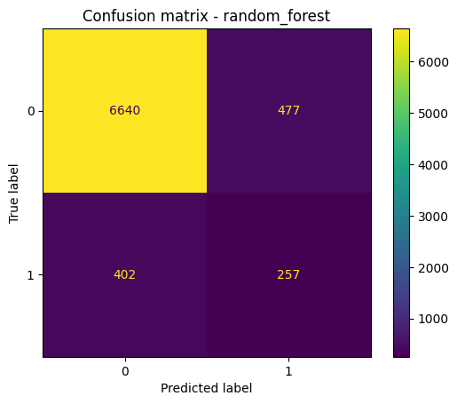
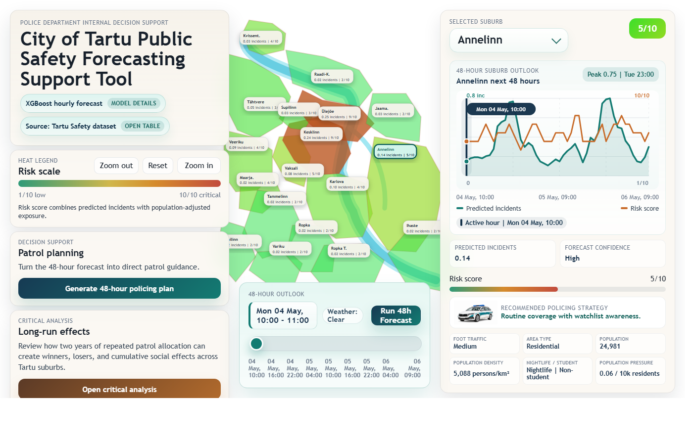

Machine Learning (ML) / AI in Public Sector / Critical Data Studies (CDS)
Predicting High-Risk Crime Areas in Tartu
A synthetic data proof-of-concept for ML-based decision support
Problem
Police resource allocation is often reactive, while real crime data is restricted by privacy, ethics, and access rules.
Objective: test whether a simple ML pipeline can predict high-risk area-time combinations without using real personal data.
Core question: can predictive policing systems be built technically, and what risks emerge when they guide decisions?
Approach
Unit of analysis: one Tartu district at one hour. Output: probability of the area-hour being high-risk.
Data
Synthetic environment: 18 districts x 90 days x 24 hours = 38,880 area-hours in the current Project_Crime dataset.
Target: high-risk = incident_count >= 1; only 3,297 rows (8.48%) are high-risk.
- Time: hour, weekday, weekend, night
- Context: weather and city events
- Area: density, nightlife, student zones
- History: past incident patterns
Why synthetic? No privacy risk, full control, reproducible experimentation.
Weak point: the model learns the assumptions used to create its reality.
Models tested
| Model | Task | Main setup | Notebook result |
|---|---|---|---|
| Linear regression | Count prediction | One-hot encoded features; 80/20 train-test split. | MAE 0.164, MSE 0.105, R2 0.146. Weak fit for incident counts. |
| PyCaret regression sweep | Count prediction | 19 regressors, 10-fold CV, session 845; best was gradient boosting. | Best R2 0.197, RMSE 0.316, MAE 0.149. Counts remained hard to explain. |
| Decision tree | Incident-count class | Default DecisionTreeClassifier, no depth limit. | Accuracy 0.894, macro-F1 0.225. Mostly learned the zero-incident majority. |
| Logistic regression | High-risk binary | Balanced class weights, max_iter 1000, probability scores. | Acc 0.749, precision 0.217, recall 0.753, F1 0.337, ROC-AUC 0.812. |
| Random forest | High-risk binary | 100 trees, min_samples_leaf 2, balanced_subsample, thresholded labels. | Acc 0.887, precision 0.350, recall 0.390, F1 0.369, ROC-AUC 0.768. Best F1. |
Takeaway: classification was more useful than count regression; random forest gave the best F1, while logistic regression ranked risk best by ROC-AUC.
Results
Random forest gave the best F1 for high-risk classification: 88.7% accuracy, F1 = 0.369, precision = 0.350, and recall = 0.390.
Confusion Matrix
random forest
How to read: Rows show the real label; columns show the model prediction. Label 0 means normal, label 1 means high-risk. Correct predictions are 6,640 normal area-hours and 257 high-risk area-hours. Errors are 477 false alarms and 402 missed high-risk cases.
ROC Curve
actual scoresROC reading: The ROC curve shows the trade-off between catching high-risk area-hours and falsely flagging normal ones. Logistic regression ranked cases best overall (ROC-AUC 0.812); random forest was lower on ROC-AUC (0.768) but performed best on F1, so it is used for the confusion matrix above.
Feature Importance
random forestFeature insight: Top features are time and area descriptors: strong signals, strong assumptions.
Limitations
- Synthetic data simplifies real-world complexity.
- The model predicts patterns, not causes.
- Inequality and segregation are missing or simplified.
- Thresholds turn uncertainty into concrete action.
Application

- Interactive Tartu risk map with district-level scores.
- Selected suburb view shows 48-hour predicted incidents and risk.
- Prototype links model details, dataset view, policing plan, and critical analysis.
Critical Analysis
Operational logic: identify top-risk district-hours and allocate more patrol attention there.
Critical point: the system does not detect crime; it detects where police look.
- Datafication: crime becomes a pattern, not a social phenomenon.
- Feedback loops: repeated attention can manufacture hotspots.
- Bias amplification: data structures can reproduce inequality.
- False objectivity: scientific-looking outputs hide assumptions.
Conclusion
Technically: the system is easy to build.
Practically: it creates a high risk of misuse if treated as objective policing knowledge.